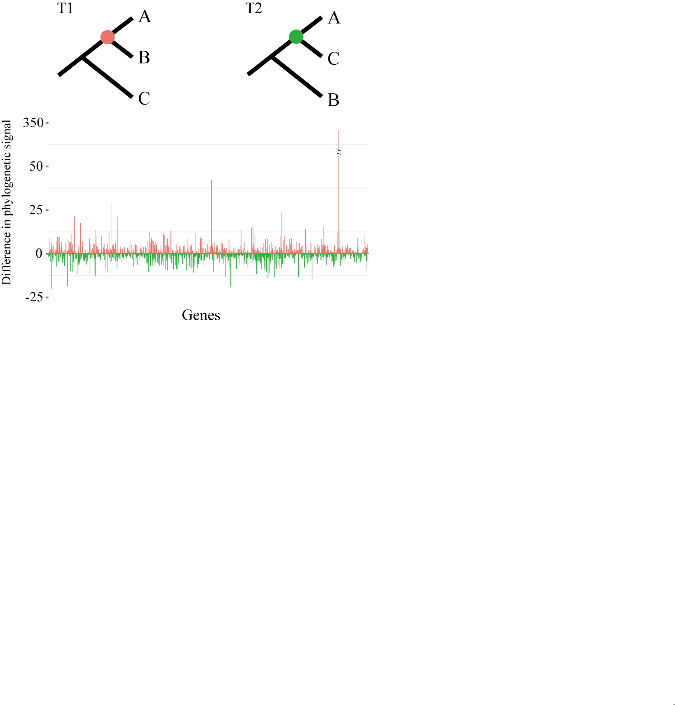

1. Phylogenomics with genome-scale data
My Ph.D. dissertation research at Sun Yat-sen University focused on developing universal nuclear markers for the vertebrate tree of life. At that time, for vertebrate phylogenetics, the most widely used approach for building multi-locus data sets is still conventional targeted polymerase chain reaction (PCR) and the sequencing of selected orthologous genes. However, the PCR-based method is laborious: 1) most practitioners spend much time developing and screening molecular markers for their group of interest; 2) it requires PCR of each organism at each locus, not to mention the extra effort involved in PCR optimization, gel-purification, and cloning. On the basis of multiple genome alignments (Shen et al. 2011) and an efficient Nested PCR strategy that often (~90%) produced a single and strong amplification target band (Shen et al. 2012), we deigned a toolkit which contains 102 universal nuclear genes for the vertebrate tree of life (Shen et al. 2013). This toolkit has provided relatively high utilities (including amplification efficiency and phylogenetic resolution) in salamanders (Shen et al. 2016) and frogs (Feng et al. 2017).
2. Phylogenetic incongurence
Phylogenomic studies have resolved countless branches of the tree of life, but remain strongly contradictory on certain, contentious relationships. Here, we use a maximum likelihood framework to quantify the distribution of phylogenetic signal among genes and sites for 17 contentious branches in plant, animal and fungal phylogenomic data matrices (Shen et al. 2017). We find that resolution in some of these 17 branches tiny subsets of very large data matrices can drive the resolution of specific internodes, Therefore, quantifying and visualizing the distribution of phylogenetic signal would also be helpful for the identification of any sites or genes that might be exerting a disproportionate amount of influence on the resolution of a given contentious branch.

3. Universal nuclear marker toolkit for vertebrate phylogenomics
My Ph.D. dissertation research at Sun Yat-sen University focused on developing universal nuclear markers for the vertebrate tree of life. At that time, for vertebrate phylogenetics, the most widely used approach for building multi-locus data sets is still conventional targeted polymerase chain reaction (PCR) and the sequencing of selected orthologous genes. However, the PCR-based method is laborious: 1) most practitioners spend much time developing and screening molecular markers for their group of interest; 2) it requires PCR of each organism at each locus, not to mention the extra effort involved in PCR optimization, gel-purification, and cloning. On the basis of multiple genome alignments (Shen et al. 2011) and an efficient Nested PCR strategy that often (~90%) produced a single and strong amplification target band (Shen et al. 2012), we deigned a toolkit which contains 102 universal nuclear genes for the vertebrate tree of life (Shen et al. 2013). This toolkit has provided relatively high utilities (including amplification efficiency and phylogenetic resolution) in salamanders (Shen et al. 2016) and frogs (Feng et al. 2017).